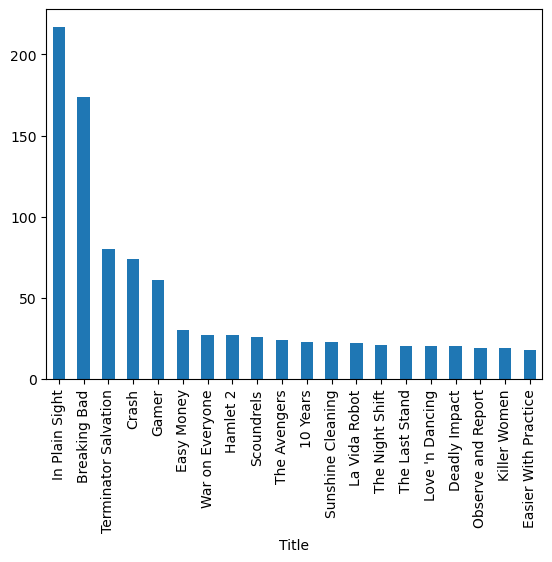

Python for Hydrology
1.0
Main Curriculum
Part 0: Introduction to Python
Part 1: Flopy
Bonus Examples
General Python
Let’s get some free city data for Albuquerque, NM and make a heatmap of where in town most Breaking Bad filming took place
Reference
Additional links
Contributing
Glossary of jargon
Python for Hydrology
Bonus examples
View page source
Bonus examples
¶

Let’s get some free city data for Albuquerque, NM and make a heatmap of where in town most Breaking Bad filming took place